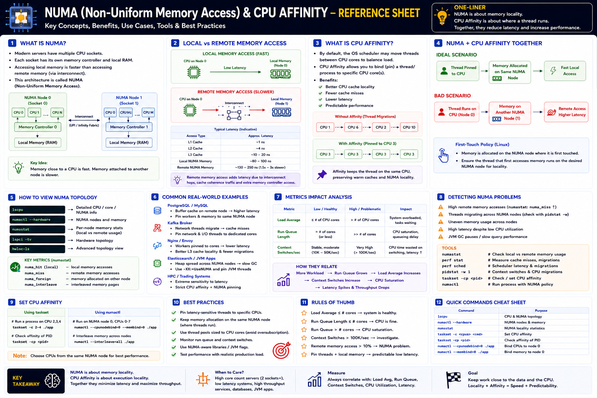

Non-Uniform Memory Access — Staff/Principal Engineer level
Why This Matters
NUMA and CPU Affinity explain why a service at 40% CPU utilization can still have terrible latency — a gap that separates Senior from Staff Engineers.
The Big Picture
Modern high-performance servers contain multiple CPU sockets, multiple NUMA nodes, local memory per CPU, and high-speed interconnects. This is NUMA — Non-Uniform Memory Access.
Memory close to a CPU is fast. Memory attached to another CPU is slower.
Where a thread runs and where its memory is allocated directly affects application latency.
Why NUMA Exists
As servers scaled to 32, 64, 128, 256 cores, a single memory controller became the bottleneck. NUMA solves this by dividing hardware into multiple nodes — each CPU owns its own memory controller and RAM.
What is a NUMA Node?
A NUMA node consists of: CPU cores, Memory Controller, Local RAM, and Shared Last-Level Cache.
Each node accesses its own memory much faster than the other node's memory.
Local Memory vs Remote Memory
Memory Latency Numbers
| Memory Access | Approximate Latency |
|---|---|
| L1 Cache | ~1 ns |
| L2 Cache | ~4 ns |
| L3 Cache | ~10–20 ns |
| Local NUMA RAM | ~80–100 ns |
| Remote NUMA RAM | ~130–250 ns |
Remote memory can be 1.5–3× slower than local memory depending on hardware.
What is CPU Affinity?
Linux normally migrates threads between cores for load balancing, causing cache misses. CPU Affinity pins a thread to specific cores.
Without Affinity
With Affinity
Why CPU Affinity Matters
Thread stays on one CPU
Thread migrates frequently
NUMA + CPU Affinity Together
Ideal
Bad
Keep both the thread and its memory on the same NUMA node.
First-Touch Memory Allocation (Linux)
Linux allocates memory on the NUMA node where it is first accessed.
If another CPU later executes the thread, memory may become remote, increasing latency.
Real-World Examples
| System | NUMA Impact | Optimization |
|---|---|---|
| PostgreSQL | Buffer cache on wrong NUMA node → every page access crosses interconnect | Pin workers + memory to same node |
| Kafka | Thread migration → cache misses, lower throughput | Pin networking threads to dedicated cores |
| Nginx | Workers migrating → cache cold | Pin each worker to a CPU core |
| Kubernetes | Pod moves between NUMA nodes → latency spikes | CPU Manager + Topology Manager |
| Elasticsearch | Heap spread across nodes → GC and access slower | NUMA-aware JVM settings |
| Redis | Cache misses from CPU migration | Dedicated CPU cores via affinity |
Linux NUMA Tools
Staff Engineer Thinking
Junior
CPU usage is only 40%. Why is the app slow?
Senior
Is there lock contention?
Staff asks
Production Failure Scenarios
High CPU Migrations
Cause: Scheduler frequently moves threads · Impact: Cache misses and higher latency · Fix: Pin critical threads using CPU affinity
NUMA Imbalance
Cause: Memory on Node 1, threads on Node 0 · Impact: Remote memory access increases latency · Fix: Use numactl or NUMA-aware allocators
Kubernetes Latency Spikes
Cause: Pod scheduled across multiple NUMA nodes · Impact: Cross-node memory traffic · Fix: Enable Topology Manager + CPU Manager
JVM Performance Regression
Cause: Large heap spread across NUMA nodes · Impact: GC and memory access slower · Fix: NUMA-aware JVM settings + aligned thread placement
Staff Engineer Decision Framework
| Scenario | Recommended Approach |
|---|---|
| General web application | Default Linux scheduling |
| High-throughput database | NUMA-aware memory allocation |
| Low-latency trading engine | CPU affinity + NUMA pinning |
| Kafka broker | Pin network and I/O threads |
| Redis cache | Dedicated CPU cores |
| Kubernetes latency-sensitive pod | CPU Manager + Topology Manager |
NUMA vs CPU Affinity
| Feature | NUMA | CPU Affinity |
|---|---|---|
| Focus | Memory locality | CPU execution locality |
| Goal | Keep memory close to CPU | Keep thread on same CPU |
| Benefit | Lower memory latency | Better cache locality |
| Prevents | Remote memory access | CPU migrations |
| Best For | Databases, JVMs, analytics | Nginx, Kafka, Redis, trading |
Production Debugging Checklist
When latency increases unexpectedly:
perf sched, pidstat -w)numactl --hardware, lscpu)numastat)taskset -cp <pid>)perf stat)Key Takeaways
